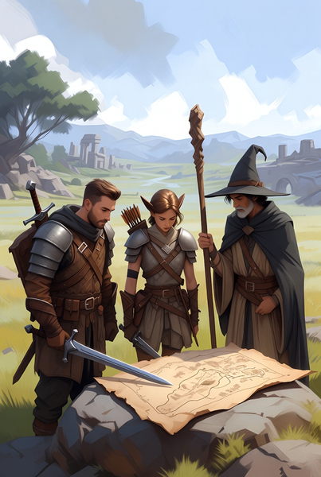

"Onde a realidade se dobra à vontade dos que ousam narrar"

O Jogador
Entre em mundos desconhecidos. Forje seu destino através das escolhas que fará.
- Crie heróis únicos
- Explore infinitos mundos
- Evolua sua lenda

O Mestre
Teça realidades. Dê vida a universos onde outros tornar-se-ão lendas.
- Comande narrativas épicas
- Gerencie guildas
- Crie sistemas vivos
Os Pilares do Sistema
Mundos Vivos
Campanhas que respiram e evoluem com cada decisão tomada.
Personagens Profundos
Fichas que contam histórias, não apenas números.
Sessões Fluidas
Ferramentas que aceleram o jogo, nunca o atrasam.

"Cada Mesa é um Universo"
Akalanata não é apenas uma plataforma. É o ponto de encontro entre a imaginação e a realidade, onde mestres e jogadores co-criam experiências que perduram para além das sessões.
Sua Jornada Começa Agora
O grimório está aberto. As páginas estão em branco. A tinta mágica espera por sua história.